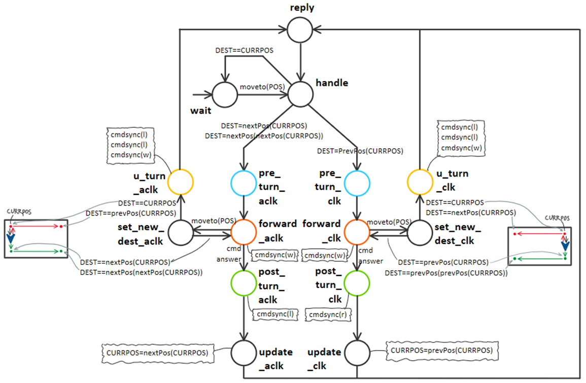
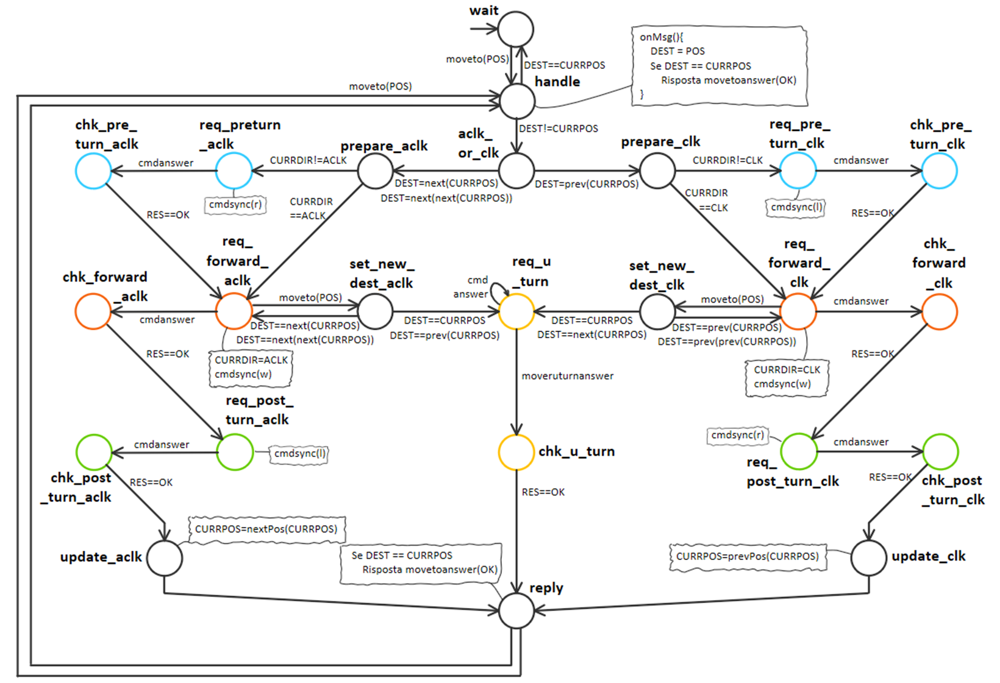
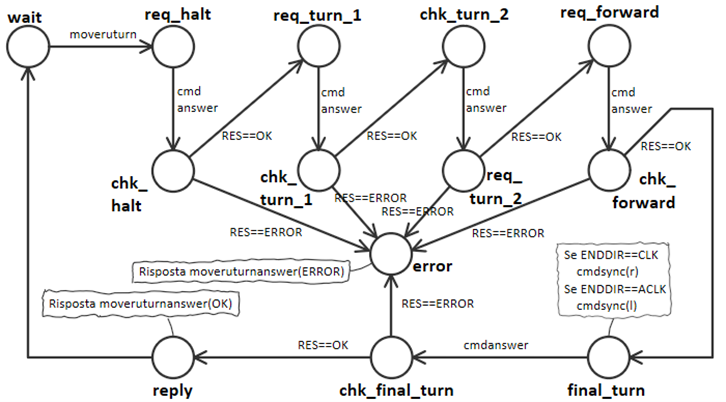

L'attore mover implementa la logica di navigazione del robot verso la prossima destinazione, seguendo la logica dell'opzione 2 descritta in grid_or_boundary_analysis.
Interfaccia:
//POSITION = INDOOR | PLASTICBOX | GLASSBOX | HOME
Request move : move(POSITION)
Reply moveanswer : moveanswer(RESULT)
Le 4 Position possono essere viste come delle specie di "macrostati" della FSM che implementa il mover. L'idea è quella di prevedere 4 macrostati, nei quali di volta in volta si decide se è necessario dirigersi verso la prossima (o la precedente) Position. Il robot è in grado di raggiungere la prossima destinazione procedendo sia in senso orario che in senso antiorario (in base a quello che risulta più conveniente in quel momento), e anche di cambiare rotta mentre si sta muovendo in avanti.

Nell'immagine viene mostrato solo il ramo da HOME a INDOOR e viceversa. Prendiamo il caso in cui si voglia andare da I→H. Siccome conviene in questo caso procedere in senso orario, giriamo (se necessario) il robot per puntarlo verso nord (ossia verso HOME)(stato pre_turn_clk), poi lo facciamo andare avanti (stato forward_clk). Se non arrivano comandi di modifica di destinazione, quando rileviamo il contatto con la parete vuol dire che siamo arrivati in HOME: giriamo quindi il robot (stato turn_clk). Se invece, mentre si procede da INDOOR a HOME arriva un comando di nuova destinazione per la quale conviene tornare indietro (nel caso corrente o INDOOR o PLASTICBOX), allora si fa una sorta di inversione ad U (stato u_turn_clk) per tornare verso la Position dalla quale si era partiti.
È possibile una implementazione più sintetica e compatta se manteniamo la posizione corrente in una variabile (così come per la variabile contenente la posizione di destinazione):
Inizialmente ci si trova nello stato di wait, quando si riceve una nuova posizione si passa allo stato di handle, che setta la variabile di destinazione DEST e la confronta con CURRPOS (contenente
la posizione attuale). Se non siamo nella destinazione finale, decidiamo se procedere in senso orario o antiorario. Anche in questo caso verifichiamo se è necessario cambiare l'orientamento del
robot, poi si procede in avanti fino al raggiungimento della nuova Position. Se però arriva un nuovo comando di move(POS) e risulta più vantaggioso cambiare direzione,
si fa una inversione ad U per tornare verso la Position dalla quale si era partiti. Se invece la nuova Position è stata raggiunta, si aggiorna la variabile CURRPOS
e si gira il robot.
Ogni volta che si giunge presso una Position si verifica se siamo arrivati a destinazione: ci si continua a muovere fino a che questo non accade.
Scendendo ancor di più nel dettaglio, la FSM effettivamente implementata è la seguente (viene omesso per brevità lo stato di errore):
Si noti come, dopo lo stato di risposta reply, si torni in handle consumando un nuovo eventuale comando di move(POS) (se presente, altrimenti transizione spontanea)
Inoltre la gestione della manovra di inversione ad U e di quello che segue è delegata ad un apposito attore moveruturn, la cui implementazione viene qui riportata:
All'attore viene passato l'orientamento corrente del robot, in modo che una volta raggiunta la Position dalla quale si era partiti il robot si giri dalla parte giusta (stato final_turn).
Architettura logica:
|
Loris Giannatempo 
|
Davide Guidetti 
|